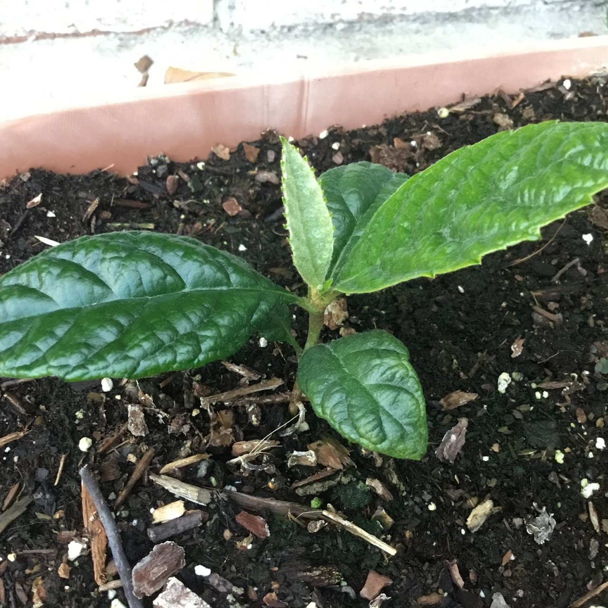
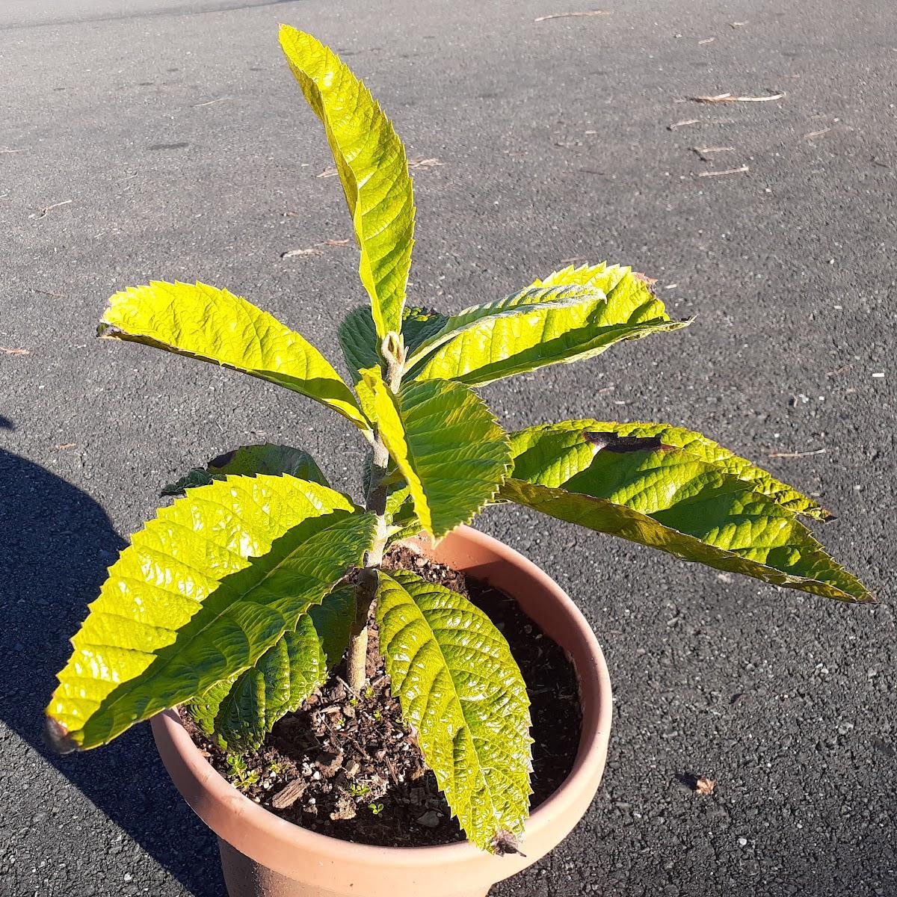
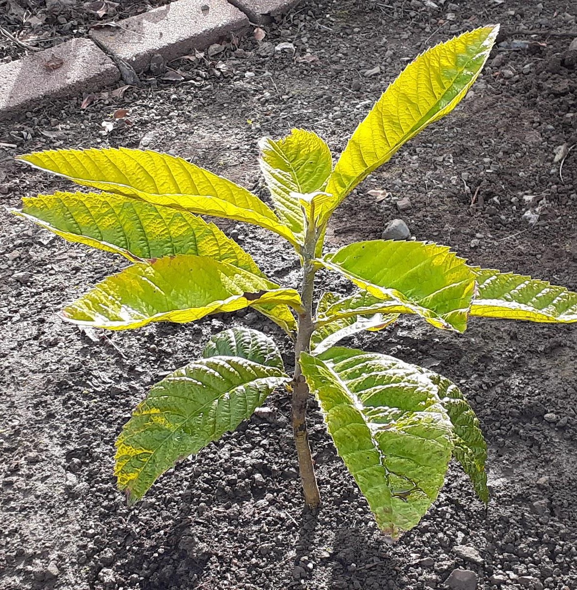
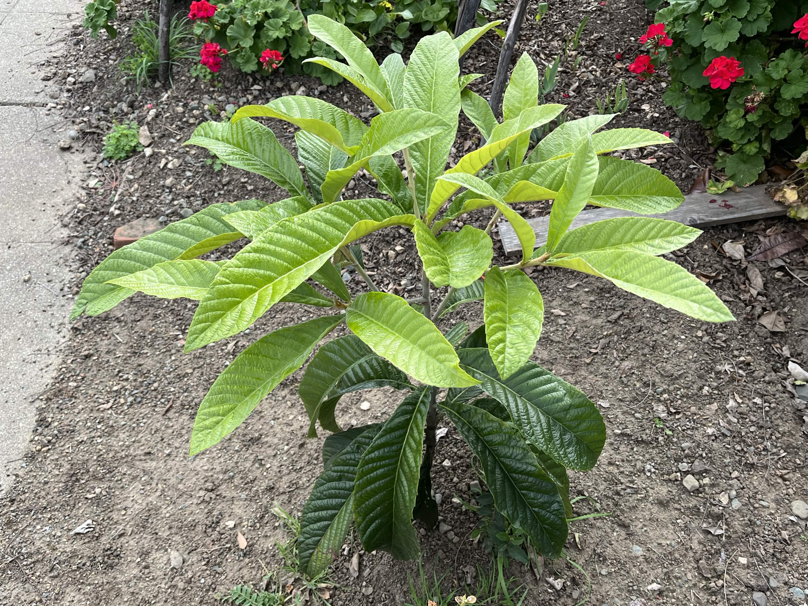
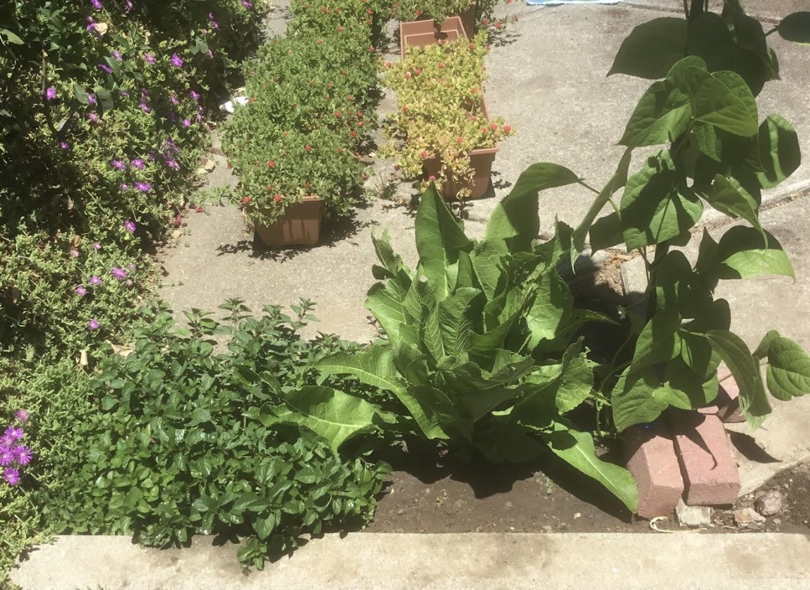
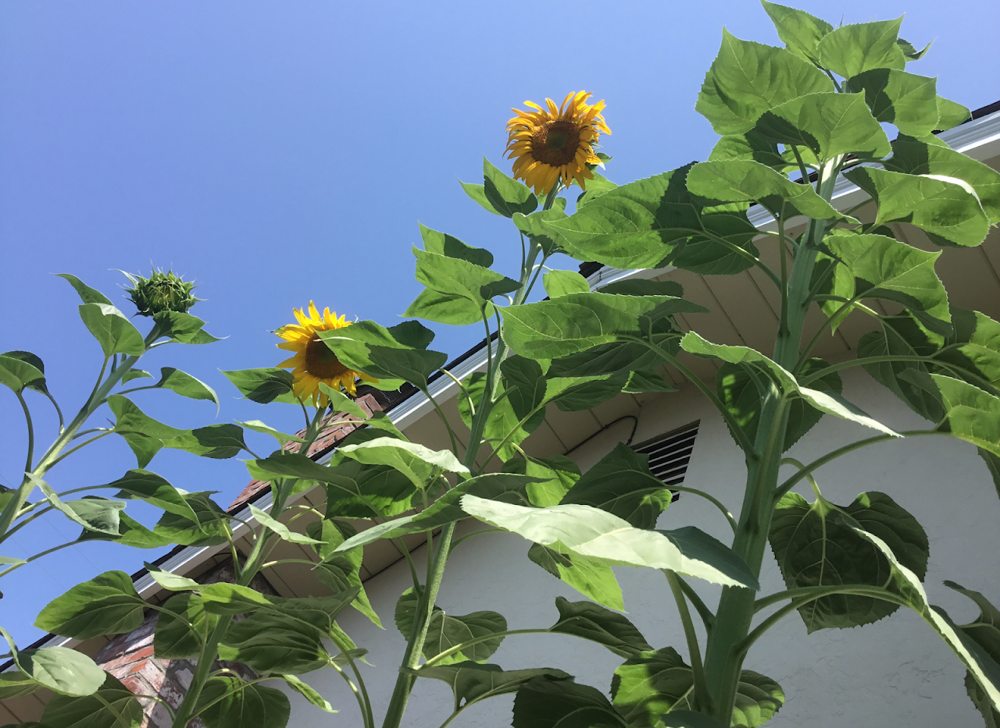
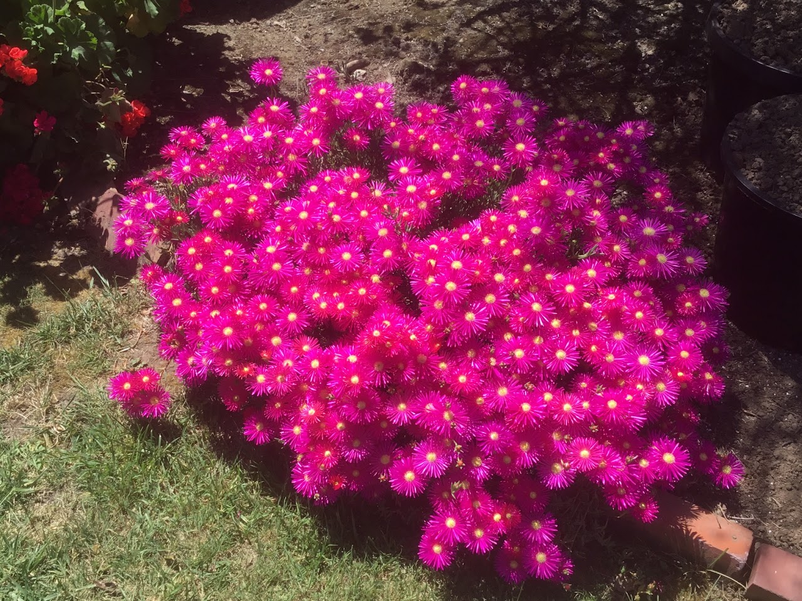

Plants
Dirt is brown, my thumb is green. Check out some of the coolest plants you've ever seen:
insert photos/caption here

This is a baby loquat tree I tended to for several months. I planted its seed after eating some fruit at a family gathering.

2.5 years after the first photo...

Transplanted in the ground

Present day! (A couple of years after leaving for uni)

Left: 'Chocolate' hybrid mint, Center: Horseradish, Right: Blue Lake Pole Bean. Fun Fact: I did not intentionally grow the bean plant on the right! I grew beans in a nearby area about 2 years ago, and one of the seeds happened to fall and sprout there!

Sunflowers I grew during the summer of 2022. They grew as tall as my house's roof!

Brilliant-pink ice plant flowers in my backyard. This is an unedited image, nature is great!
Besides the plants shown above, I've also grown:
Catnip, Basil, Habanero, Roses,
Rhubarb, Garlic, Plum Tomatoes, Alpine strawberries, Dwarf potted sunflowers, Jerusalem artichoke,
Miner's Lettuce, Butterhead Lettuce, Aloe Vera (and many other succulents), Lychee, Welsh
Onions, Shallots, Potatoes, Radishes, Purslane, Carrots, Ice plants, and more!
While they are not biologically defined as plants, I've also grown 1 lb. of oyster mushrooms from a Home Depot bucket. That was very fun!
I love my indoor plants; in my room, I have grown:
- Two "ZZ" plants for about four years.
- Pothos ivy (which now climbs the walls of my uni dorm)
- Baby Rubberplant (watch me transplant it here)
Check out my YouTube video showcasing some of the plants listed on this page.